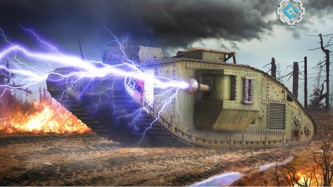

Godina: 1934.
Teleforce je predloženo obrambeno oružje Nikole Tesle koje je elektrostatičkim odbijanjem ubrzalo kuglice velikom brzinom unutar vakuumske komore, a zatim ih ispustilo iz usmjerenih mlaznica na predviđene ciljeve. Tesla je opisao oružje kao sposobno za upotrebu protiv kopnenog pješaštva ili u protuzračne svrhe. Tesla je opisao operaciju Teleforcea 1934. godine, navodeći njegovu superiornost u odnosu na zrake smrti:
„Otkrio sam nedavna otkrića od neprocjenjive vrijednosti ... Leteći stroj potpuno je demoralizirao svijet, toliko da su u nekim gradovima, poput Londona i Pariza, ljudi u smrtnom strahu od zračnog bombardiranja. Nova sredstva koja sam usavršio pružaju apsolutnu zaštitu protiv ovog i drugih oblika napada. ... Ova nova otkrića, koja sam eksperimentalno izveo u ograničenom opsegu, stvorila su dubok dojam.“